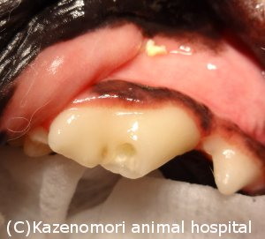
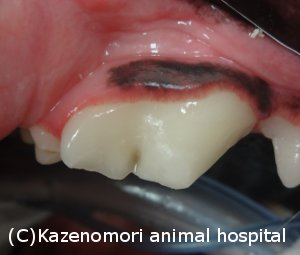
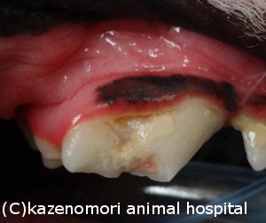

** Topic 2012年 8月**

●歯髄の自己防衛？
『犬の歯は、丈夫！』は、よく言われるようですが、硬いものを咬んで、欠けてしまうこともしばしば。特に、上顎の第４前臼歯は、上顎の臼歯の中で最も大きいのに、欠けてしまう歯No.1と言えるでしょう。
それは、大きなものを食いちぎり、のどを通る大きさにする機能をするものであり、【裂肉歯】と呼ぶ所以でもあります。
この大きな歯は、欠けると歯に栄養をとどける血管がある歯髄が露出し、細菌感染をうけ、放置しておくと最終的には細菌感染をうけ、歯牙自身また、歯周組織まで炎症が波及してしまいます。
歯が破折してから、早期であれば、歯髄を生かした形で修復治療が可能となり、その後、ほかの歯牙同様に、十分機能することが可能です。
写真は、右上顎第４前臼歯の破折歯牙です。中央にプクッと小さく腫れて突出して見えるのが、歯髄です。歯髄を感染から防御するよう歯内治療をし、歯冠の修復を行いました。
[左から順に、処置前、歯髄処置後、修復完了後の写真です。]